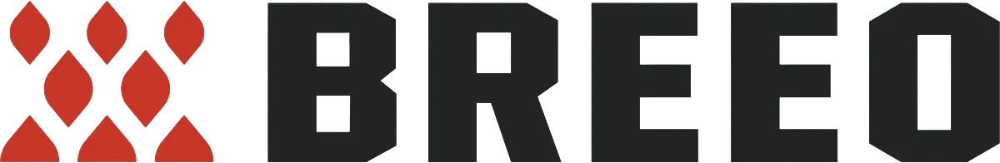

Why Homeowners Choose Us
Why Homeowners Choose Us for Custom Outdoor Kitchens
An outdoor kitchen should do more than move the grill outside. It should make the space easier to use, better to gather in, and more connected to the home itself. But not every outdoor kitchen contractor is equipped to think through the whole picture.
At BOLLMAN, we don't stop at the cabinetry or appliances. We think through the surrounding patio, transitions, grading, drainage, and how the kitchen fits into the overall outdoor living environment. As experienced outdoor kitchen builders, BOLLMAN designs and builds outdoor dining and cooking spaces as part of the larger property, with attention to flow, structure, finish quality, and long-term performance.
We also work with respected industry partners including BBQ Guys, Breeo, and Solo to give clients strong options across kitchen, fire, and furnishing elements.
Trusted Brand Partnerships
BBQGuys
Trusted outdoor kitchen solutions that pair quality appliances and proven systems with a polished finished look.
Breeo
Refined fire features and outdoor furnishings that add comfort, character, and a more complete outdoor living experience.

Solo
Modern fire pit options that bring warmth, simplicity, and an easy natural gathering point to the backyard.